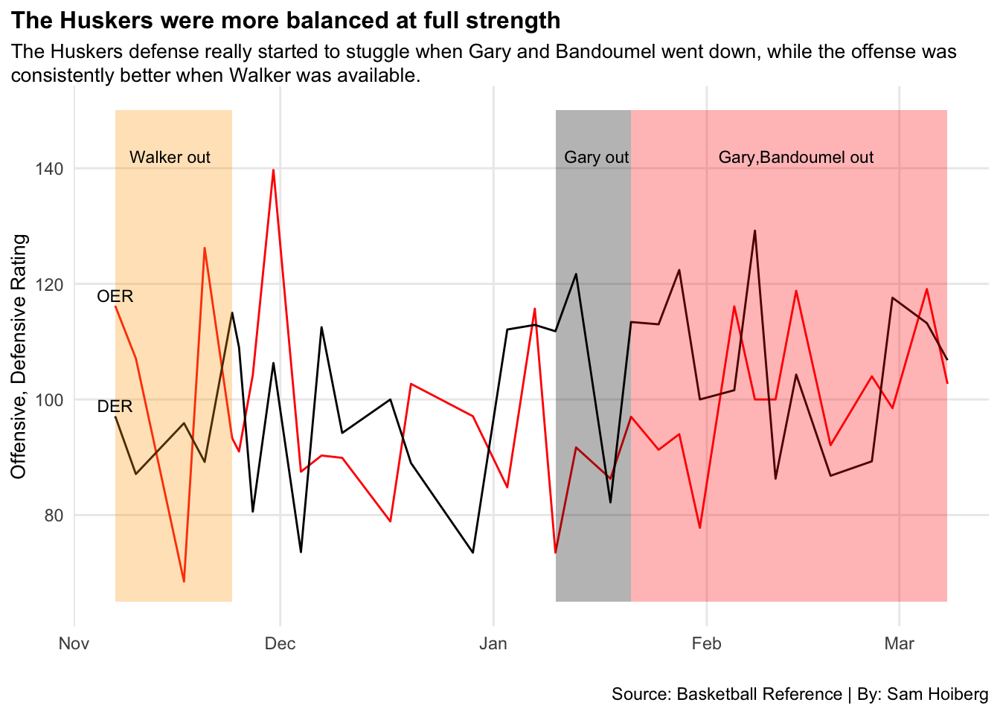
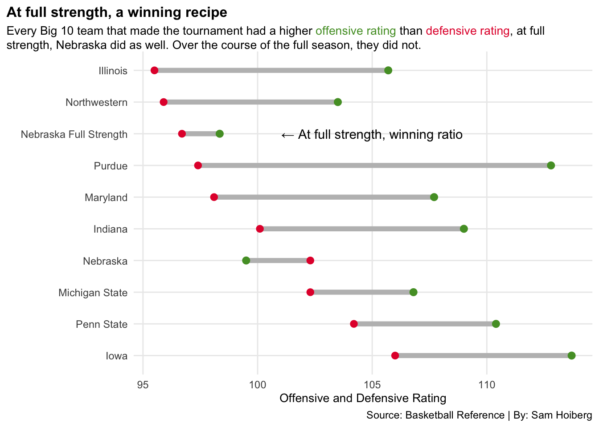

Would Nebraska have made the tournament if they were at full strength all Year?
Author
Sam Hoiberg
Published
May 2, 2023
The Nebraska men’s basketball team faced a lot of adversity this year. The Huskers were a totally new team, looking to bring the program out of the dumps after a very poor season. A few leaders came from the transfer portal including hometown kid and point guard, Sam Griesel, the defensive specialist, Emmanuel Bandoumel, and garbage man, Juwan Gary. All three transfers were immediate starters and they paired with the Husker’s most productive returning player, all league center Derrick Walker. Unfortunately, the world was not able to see these guys play together all that much. Derrick Walker was out for the first five games of the season. The Huskers finished with a 3-2 record during that span, but it was hard not to think they would have done better if they had their best player. It was a bumpy return for Derrick Walker as they lost to Memphis, but the team was finally at full strength, and they showed a lot of promise. Nebraska went on to win their next three games all against high major schools including a top 10 road win against Creighton. Sam Griesel would miss the next game in a loss to high ranked Indiana but in their following game, they lost in a heartbreaker to number one ranked Purdue on a questionable call that easily could have gone either way. Despite the loss, the Huskers were looking like a real threat to make the NCAA tournament. A few games later, the team was struck with disaster as Juwan Gary went down to a season shoulder injury. Following that, Emmanuel Bandoumel suffered a season ending knee injury. It took a while for the Huskers to return to form, and it was too little too late to make a tournament run. This left a major question mark, would the Huskers have made the NCAA tournament if they were at full strength all year?
Nebraska was known as a defensive team when they were at full strength, and it was evident that their defense was going to perform worse after they lost their two defensive leaders. This chart highlights Nebraska’s defensive as well as offensive efficiency ratings over the course of the season to see how they performed with and without their team leaders. The red line shows offensive efficiency rating, and the black shows defensive efficiency rating. Basketball efficiency ratings show how many points a team would score per 100 possessions. The higher the offensive and the lower the defensive rating, the better. The first section of the chart that is highlighted is Derrick Walker’s time out. The schedule was not overly difficult at this time, but their ratings were very inconsistent across the board. Once they were at full strength, the offense showed immediate improvement and the defense rating was consistently under 100, which is great. The gray and red sections highlight Gary and Bandoumel’s season ending injuries, which shows the defense was much worse after they got hurt.
Code
library(tidyverse)library(ggrepel)library(ggalt)library(gt)library(ggtext)team <-read_csv("teamadvanced2023.csv") %>%mutate(School =gsub(" NCAA", "", School))opp <-read_csv("oppadvanced2023.csv") %>%mutate(School =gsub(" NCAA", "", School))players <-read_csv("playerstats.csv")nebraska <-read_csv("nebraskaadvanced2023.csv")oteam <- team %>%select(School, ORtg)dteam <- opp %>%select(School, ORtg) %>%rename(DRtg = ORtg)teamrtg <- oteam %>%inner_join(dteam)ne <- team %>%filter(School =="Nebraska")ggplot() +geom_line(data=nebraska, aes(x=Date, y=ORtg), color="red") +geom_line(data=nebraska, aes(x=Date, y=DRtg), color="black") +geom_rect(aes(xmin=as.Date("2022-11-07"), xmax=as.Date("2022-11-24"), ymin=65, ymax=150), alpha=.3, fill="orange") +geom_rect(aes(xmin=as.Date("2023-01-10"), xmax=as.Date("2023-01-21"), ymin=65, ymax=150), alpha=.3, fill="black") +geom_rect(aes(xmin=as.Date("2023-01-21"), xmax=as.Date("2023-03-08"), ymin=65, ymax=150), alpha=.3, fill="red") +geom_text(aes(x=as.Date("2022-11-15"), y=142, label="Walker out"), size=3) +geom_text(aes(x=as.Date("2023-01-16"), y=142, label="Gary out"), size=3) +geom_text(aes(x=as.Date("2023-02-14"), y=142, label="Gary,Bandoumel out"), size=3) +geom_text(aes(x=as.Date("2022-11-07"), y=118, label="OER"), size=3) +geom_text(aes(x=as.Date("2022-11-07"), y=99, label="DER"), size=3) +labs(title="The Huskers were more balanced at full strength", subtitle ="The Huskers defense really started to stuggle when Gary and Bandoumel went down, while the offense was consistently better when Walker was available.", y="Offensive, Defensive Rating", x="", caption ="Source: Basketball Reference | By: Sam Hoiberg") +theme_minimal() +theme(plot.title =element_text(size =12, face ="bold"),axis.title =element_text(size =10), plot.subtitle =element_textbox_simple(size=10), panel.grid.minor =element_blank(),plot.title.position ="plot" )

The Huskers had a lot of different injuries and played without certain guys in many games, this table looks at their offensive and defensive efficiency ratings comparing how they played with Walker out, at full strength, with Gary out, and with both Bandoumel and Gary out. Nebraska was at their best defensively when they were at full strength, and their offensive rating was higher than their defensive rating, which is a great ratio for winning games.
Code
dw <- nebraska %>%filter(Date <=as.Date("2022-11-24")) %>%summarize(avgORtg=mean(ORtg), avgDRtg=mean(DRtg) ) %>%mutate(roster="Walker Out")full <- nebraska %>%filter(Date >as.Date("2022-11-24") & Date <as.Date("2023-01-10")) %>%summarize(avgORtg=mean(ORtg), avgDRtg=mean(DRtg) ) %>%mutate(roster="Full Strength")jg <- nebraska %>%filter(Date >as.Date("2023-01-10") & Date <as.Date("2023-01-21")) %>%summarize(avgORtg=mean(ORtg), avgDRtg=mean(DRtg) ) %>%mutate(roster="Gary Out")eb <- nebraska %>%filter(Date >as.Date("2023-01-21") & Date <as.Date("2023-03-08")) %>%summarize(avgORtg=mean(ORtg), avgDRtg=mean(DRtg) ) %>%mutate(roster="Gary and Bandoumel Out")rosters <-bind_rows(dw,full,jg,eb)rosters %>%select(roster, everything()) %>%gt() %>%cols_label(roster =" ",avgORtg ="Average Offensive Efficiency Rating",avgDRtg ="Average Defensive Efficiency Rating" ) %>%tab_header(title ="Defense wins championships",subtitle ="The Huskers were an elite defensive team at full strength. Their offense was nothing special, but it was better than what they allowed." ) %>%tab_style(style =cell_text(color ="black", weight ="bold", align ="left"),locations =cells_title("title") ) %>%tab_style(style =cell_text(color ="black", align ="left"),locations =cells_title("subtitle") ) %>%tab_style(style =list(cell_fill(color="red"),cell_text(color ="white") ),locations =cells_body(rows = roster =="Full Strength" ) ) %>%tab_source_note(source_note =md("**Source:** Basketball Reference | **By:** Sam Hoiberg") )%>%tab_style(locations =cells_column_labels(columns =everything()),style =list(cell_borders(sides ="bottom", weight =px(3)),cell_text(weight ="bold", size=12) ))
Defense wins championships
The Huskers were an elite defensive team at full strength. Their offense was nothing special, but it was better than what they allowed.
Average Offensive Efficiency Rating
Average Defensive Efficiency Rating
Walker Out
102.26000
96.8600
Full Strength
98.34545
96.7000
Gary Out
89.00000
101.9500
Gary and Bandoumel Out
101.06364
105.7909
Source: Basketball Reference | By: Sam Hoiberg
The final chart looks at all of the teams from the big 10 that made the NCAA tournament comparing their offensive and defensive efficiency ratings. The list also includes Nebraska’s entire season’s numbers, as well as their numbers at full strength. The results indicated that every team that made the tournament had a higher offensive rating than defensive rating. Nebraska’s full season numbers had a higher defensive than offensive rating, but when they were at full strength, they had a winning ratio just as every tournament team.
Code
big <-c("Nebraska", "Penn State", "Illinois", "Purdue", "Iowa", "Indiana", "Maryland", "Michigan State", "Northwestern")bigteams <- teamrtg %>%filter(School %in% big) %>%add_row(School ="Nebraska Full Strength",ORtg =98.34545, DRtg =96.7 )ggplot() +geom_dumbbell(data=bigteams,aes(y=reorder(School,-DRtg), x=DRtg, xend=ORtg),size =2,colour ="grey",colour_x="#E41C38",colour_xend ="#549C30") +geom_text(aes(x=105, y="Nebraska Full Strength", label="← At full strength, winning ratio")) +labs(title="At full strength, a winning recipe",subtitle="Every Big 10 team that made the tournament had a higher <span style = 'color:#549C30;'>offensive rating</span> than <span style ='color:#E41C38;'>defensive rating</span>, at full strength, Nebraska did as well. Over the course of the full season, they did not.",y=" ",x="Offensive and Defensive Rating",caption="Source: Basketball Reference | By: Sam Hoiberg") +theme_minimal() +theme(plot.title =element_text(size =12, face ="bold"),axis.title =element_text(size =10), plot.subtitle =element_textbox_simple(size=10), panel.grid.minor =element_blank(),plot.title.position ="plot" )

In conclusion, the Nebraska Cornhuskers had a very realistic chance to make the NCAA tournament, had they been at full strength. They had a winning recipe with their defensive and offensive numbers, and it is unfortunate the world did not get to see it happen.